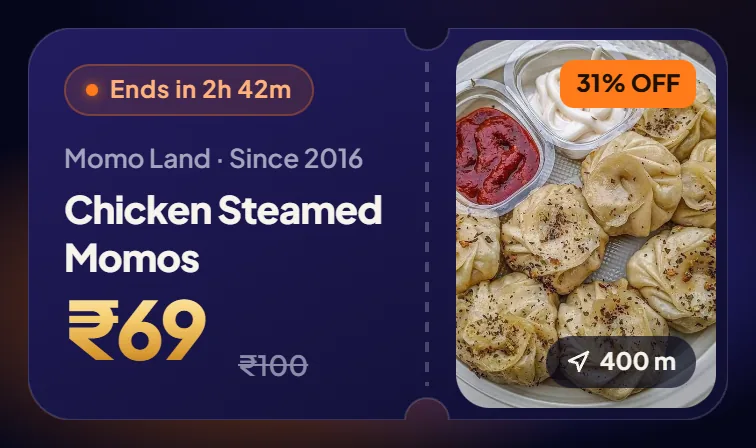
Steal ticket
The one glowing object on Home. The notch and perforation mark it as something you can use.
Locall shows offers from shops near you in Durg and Bhilai. For this assignment I redesigned its Home, History and Profile, then built them as a working Expo app you can play with.
Try it in 60 seconds: Within 3 km → Food → a deal → Save → History
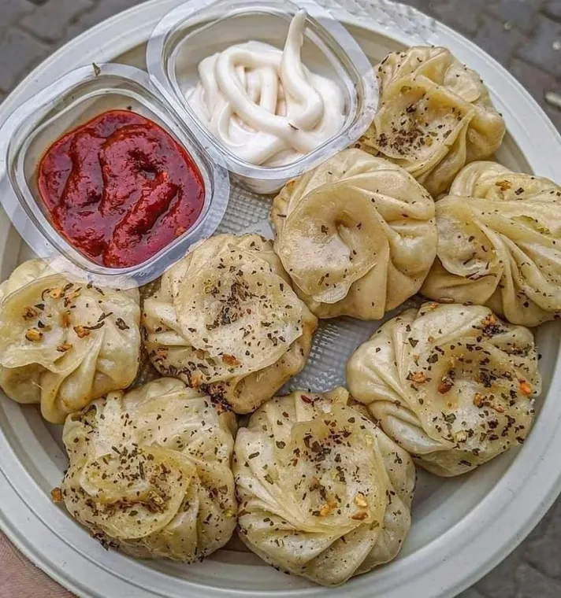
31% OFFMomo Land · 400 m · ₹69 instead of ₹100
Shops, prices and people are sample data.
On the left is Locall today, from its own screenshots. On the right is the redesign, in a look I call Locall Night: a deep navy night, one glowing object per screen, and gold for money.
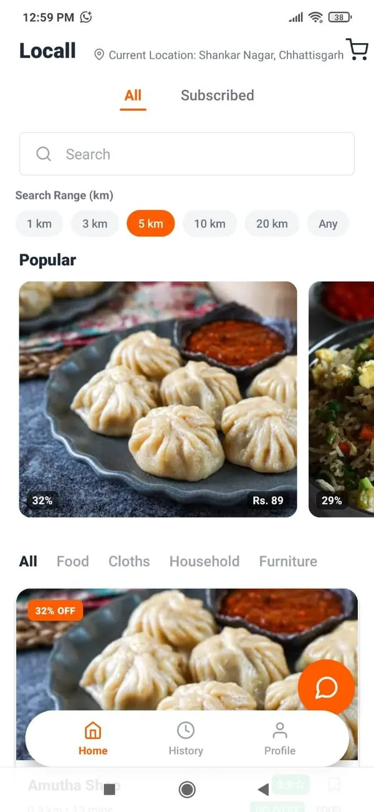
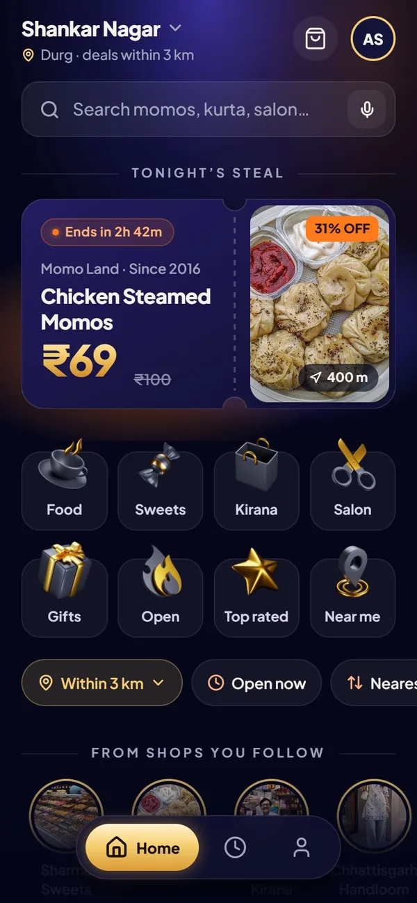
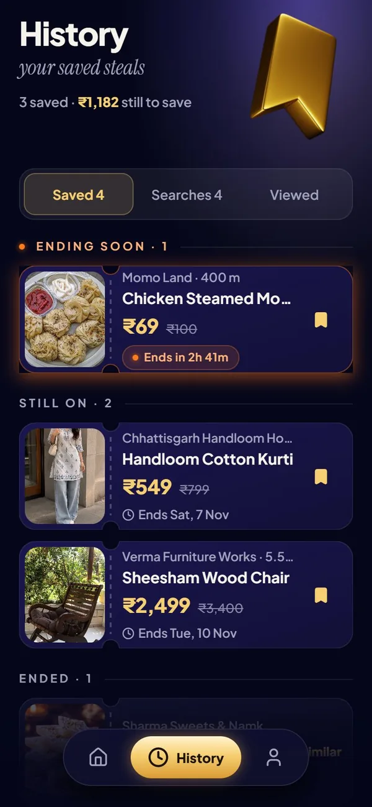
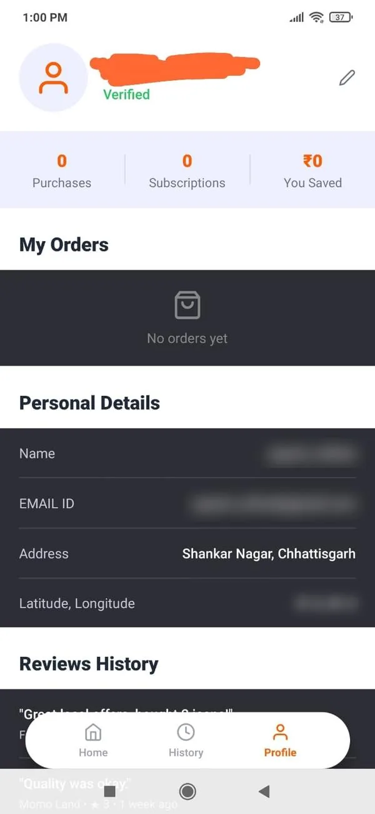
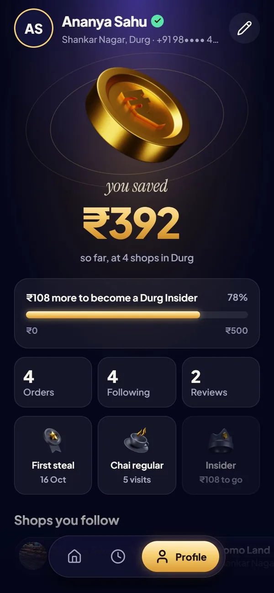
Numbered on Locall's current screens. I ranked them by how much each one blocks the main job: find a deal nearby and act on it. Here are the six biggest.
Home
History
Profile
Five rows of controls sit above the first deal. The six km chips take a whole row.
→ One radius chip, and a deal on screen one."Popular" cards show only "32%" and "Rs. 89". No item, shop or distance.
→ Every deal card shows item, shop, price, MRP, distance and end time.The chat button and the floating nav cover the shop name, rating and distance.
→ Chat moved to WhatsApp on the deal page. Screens leave room for the dock.History has no past searches, which the brief asks for. "Ending soon" is a filter shown as a tab.
→ Saved · Searches · Viewed.Profile stats read 0 · 0 · ₹0 with no meaning and no next step.
→ "You saved ₹" as the hero. New users get a first-saving prompt.Raw latitude and longitude are shown to the user.
→ Area names only. Coordinates stay inside the app.The location is a long grey sentence squeezed next to the logo.
→ The area name as the screen title. Tap to change it.Category tabs are text only, and "Cloths" is misspelt.
→ Shortcut tiles with icons and labels, and "Clothes"."All / Subscribed" doesn't say what subscribing does.
→ "Follow", with "Get their new deals first".Cart buttons are icon-only and far from the price.
→ A labelled button next to the price.A kirana listing shows an iPhone at ₹150 (MRP ₹2,000). It looks like test data, and a price like that makes people doubt the real ones.
→ Realistic sample data, and listing checks in idea 02.No empty states, no distance, no end time and no "deal ended" state.
→ Every list has an empty state with one button. Ended deals say so."Rs." on one screen, "₹" on another.
→ "₹" everywhere, with Indian digit grouping.The name row shows an email handle instead of a name. (Blurred here.)
→ Name, initials and a verified tick.Dark slabs alternate with white sections, so it reads like two apps.
→ One surface system.Reviews are cut off under the floating nav.
→ Bottom padding sized to the dock on every tab."No orders yet" has nothing to do next, and "EMAIL ID" uses a different label style.
→ An empty state with "Browse deals".#FF6B00 on white is 2.9:1. In the redesign orange is a light fill only, and every text colour passes 4.5:1.
Locall is starting in Durg and Bhilai. The redesign switches English and हिन्दी live, with taller lines for matras.
The cart and chat icons are small. In the redesign every target is at least 44 px on web, and main buttons are 48 to 60.
A countdown appears only in the last 6 hours. Otherwise it says "Ends Thu, 5 Nov". India's 2023 dark-pattern guidelines ban false urgency.
The navy from Locall's logo, darkened into a night background. Gold is only for prices and savings. Ember orange is a warm light for dots, glows and the % badge. Ratios are measured against the night background.
Plus Jakarta Sans is the heading font on Locall's own website, so the app stays on brand.
Reading text is 16, never under 14; 12 to 13 only for badges and meta. Hindi gets lines about 18% taller.
Each one is a screenshot of the real component at phone size. The code is in src/components, and the ticket, gold number, sky glow and photo slot live in night.tsx.

The one glowing object on Home. The notch and perforation mark it as something you can use.
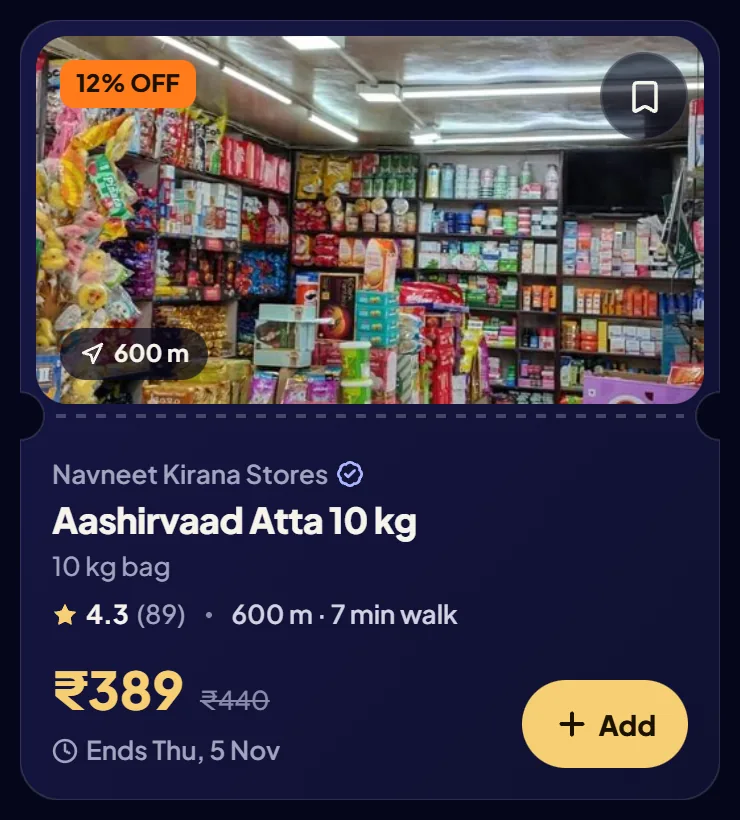
Photo, shop, item, rating, distance and walk time, price and MRP, end time and Add.
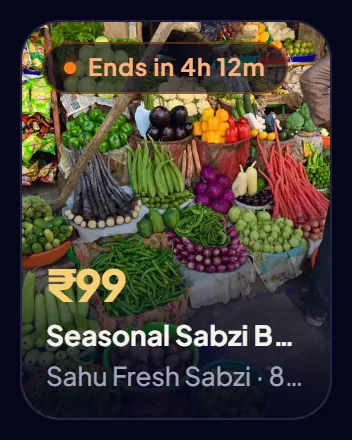
For quick rows like "Ending soon". Price first, on a dark scrim.
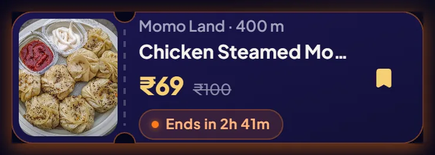
Saved and viewed deals. The first one ending soon gets an ember glow.
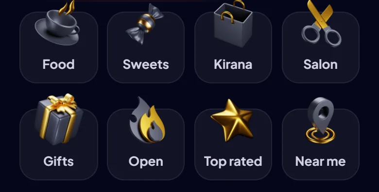
Gold 3D icons with labels. Food, Kirana and Salon filter; the rest search or sort.
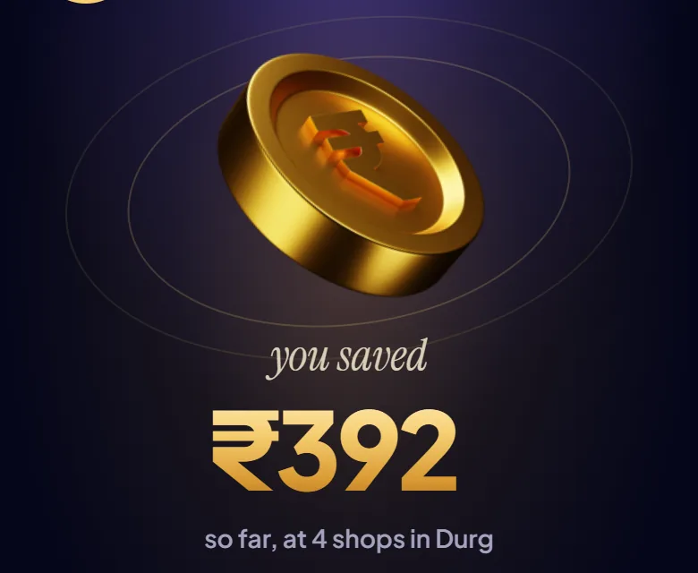
Profile's glowing object. It counts up once, from completed orders only.
Radius, open now and sort. Selected chips turn gold.
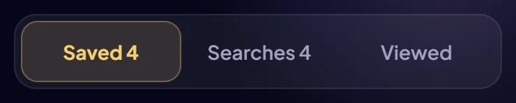
Saved · Searches · Viewed, with counts.
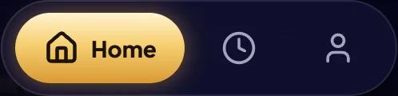
Icons only. The active tab grows into a gold capsule with its label.
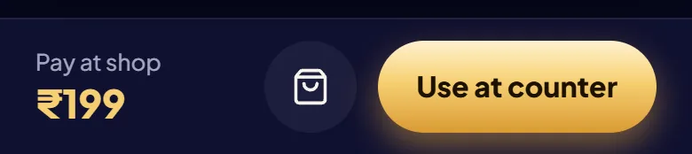
Pay at shop, add to cart, and one gold "Use at counter".
Drag to the end to use a deal. Screen readers get it as a single button.
One at a time, above the dock, with one action such as Undo or History.
Only prices and savings are gold, so the eye finds the price first.
Each screen gets one: the steal ticket, the bookmark, the coin or the claim ticket.
Notches and a perforation mean "you can use this". Don't use the shape for anything else.
Countdown only in the last 6 hours. Before that, a plain day and time.
Reading text is 16, never under 14; 12 to 13 only for badges and meta.
44 px minimum on web, main buttons 48 to 60. One gold button per screen.
Same layouts, taller lines, and no wide letter-spacing, which breaks Devanagari apart.
Only the dock floats, and every screen leaves room for it.
Removing something happens at once and shows Undo for a few seconds.
Pick a journey and the app opens at its first screen. What you do carries over between journeys: saved deals, follows, searches and orders.
Shops, prices and people are sample data. Shop hours use a fixed 6 PM clock so the demo makes sense at any hour; deal end times use the real clock. Profile › Prototype › Reset brings everything back.
Ten ideas beyond the three screens, ranked by how much they help someone find a deal and use it, against the work for a small team.
First launch asks for language and area in two taps, then shows deals. Ask for a phone number only when someone reserves.
Require an item name, a real photo, the MRP and an end time, and flag discounts over 70% for a quick look. One listing like an iPhone at ₹150 makes every other price look doubtful.
One notification 3 hours before, at most one a day. It gives people a reason to come back to what they saved.
Photo, price, shop, distance and a link that opens the deal. Locall already works through WhatsApp, so this costs little to build.
Built into the prototype: use a deal at the counter and the shop sees a short code. Shops get a reason to honour the price, and Locall gets a count of real visits.
"Rate this shop" unlocks after the counter code is used, with an optional photo. Reviews tied to a real visit are harder to fake.
locall.co.in leads with blue and the app leads with orange. Pick one pair and use it everywhere.
The radius map already exists. Browsing pins helps in markets like Indira Market, where shops sit side by side.
Keep the last feed and show "updated 10 min ago", serve small WebP images with blurred placeholders, and add a Wi-Fi-only photos setting.
Three tasks: find a snack under ₹100 within 1 km, find the deal you saved yesterday, switch to Hindi. Watch where they hesitate before building more.